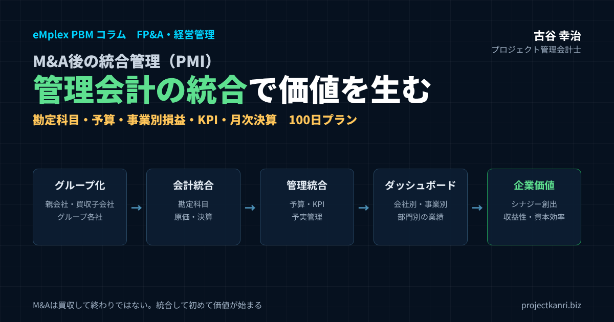

PMIとは？M&A後の管理会計統合と経営管理体制の構築方法を徹底解説―勘定科目・予算管理・事業別損益・KPI・月次決算の統合、子会社の経営管理、100日プラン、グループ経営ダッシュボード

結論：M&Aは、買収後の経営管理を統合して初めて価値を生む
この記事のポイント
- M&Aは買収して終わりではない。買収後の経営管理の統合で初めて価値が生まれる
- PMIの中心は管理会計の統合：会計統合（勘定科目・原価・決算）→管理統合（予算・KPI・予実）→グループ経営ダッシュボード
- 統合すべき5領域：勘定科目・会計ルール／予算・予実／事業別・プロジェクト別損益／KPI／月次決算・報告
- 統合の深さはM&Aの目的で決める（完全統合・報告統合・自律運営）
- Day1〜100日で、買収した会社の月次の数字を同じ様式で経営会議に
プロジェクト管理会計士の古谷です。近年、中堅・中小企業の間でも、成長の手段や事業承継の手段としてM&Aが広がっています。その一方で、M&Aの後に「買収した会社の状況がよく分からない」「期待していた効果が出ているのか判断できない」というご相談をいただくことが増えてきました。
その原因の多くは、M&Aの後の統合、つまりPMI（Post Merger Integration）が、組織や人事、システムの話にとどまり、経営の数字の仕組み、すなわち管理会計の統合が後回しになっていることにあります。親会社と買収した会社とで、勘定科目も、決算の締めの日も、予算のつくり方も、採算を見る単位も違う。その状態では、グループとしての業績を比べることも、M&Aの効果を測ることもできません。
本記事でお伝えしたいのは、M&Aは買収して終わりではなく、買収後の経営管理を統合して初めて、企業価値の向上が始まるという考え方です。そして、その中心にあるのが管理会計の統合です。会計の統合（勘定科目・原価・決算）、管理の統合（予算・KPI・予実管理）、そしてグループ経営ダッシュボードによる会社別・事業別・部門別の業績の可視化。この流れを、M&Aの目的に合わせた深さで、計画的に進めることが、PMIの成否を分けます。
私は、上場企業のホリプロで経営企画の責任者として、子会社の管理やグループの経営管理を担当し、またエンプレックスでは事業譲渡を経験しました。買う側と、譲る側の両方の立場から経営の数字に関わった経験と、200社を超える企業の経営管理のご支援の経験をもとに、PMIにおける管理会計の統合の実務をお伝えします。
PMIとは？M&A後の統合プロセスの基本
PMIとは、Post Merger Integrationの略で、M&Aの後に、買収した会社と買収した側の会社の経営、業務、組織、システム、そして意識を統合し、M&Aの目的を実現するための一連の取り組みのことです。
中小企業庁は、2022年3月に「中小PMIガイドライン」を策定し、その後、2024年3月には実践ツールと取組事例集も公表しています。M&Aにより譲り受けた事業を円滑に継続させ、譲渡側と譲受側の双方がさらに成長するためには、M&Aの後の経営や事業の統合作業であるPMIを適切に行うことが重要だという考え方が、中小企業の分野でも広がっています。
| 領域 | 主な内容 |
|---|---|
| 経営・ガバナンス | 経営方針、権限規程、取締役会・経営会議の体系 |
| 人事・組織 | 組織体制、人事制度、キーパーソンの定着 |
| 業務・システム | 業務プロセス、会計・業務システム |
| 取引先 | 顧客・仕入先との関係の維持 |
| 会計・管理会計 | 勘定科目、会計ルール、予算、損益管理、KPI、月次報告 |
PMIで扱う領域は幅広く、経営の方針やガバナンスの統合、人事や組織の統合、業務のプロセスやシステムの統合、取引先との関係の維持、そして会計と管理会計の統合などがあります。これらは互いに関係していますが、本記事では、その中でも経営の判断の土台となる、管理会計の統合に焦点を当てます。
PMIは、M&Aの契約が結ばれた後に始まるものではありません。本来は、M&Aを検討する段階から、買収した後にどのような姿を目指すのか、そのために何を統合するのかを考えておく必要があります。デューデリジェンスの段階で、買収する会社の管理会計の仕組みを確認しておくことは、その後のPMIの計画を立てるうえで欠かせない作業です。
M&Aの前に描くべき「統合後の姿」とPMI計画
PMIを成功させるためには、M&Aの前に、統合後の姿を描いておくことが欠かせません。買収した会社が、グループの中でどのような役割を担い、どのような数字を目指すのか。そのために、何を、どこまで、いつまでに統合するのか。これを文書にしたものが、PMIの計画です。
PMIの計画には、統合の目的、統合の深さ、領域ごとの統合の内容とスケジュール、推進の体制、シナジーの目標と測り方、リスクと対策を盛り込みます。管理会計の面では、勘定科目の統合の方法、月次の報告の開始の時期、予算の仕組みの導入の時期、KPIの定義、システムの統合の方針を、計画の中で明確にしておきます。
計画は、親会社の側だけでつくるのではなく、Day1の後に、買収した会社の経営陣と一緒に見直すことをおすすめします。買収した会社の実情を知っているのは、その会社の経営陣と社員です。計画を一緒に見直すことで、統合の内容が現実に合ったものになり、買収した会社の経営陣の納得感も高まります。
PMIの全体像とスケジュール
PMIの進め方は会社やM&Aの規模によって異なりますが、一般的には、次のような流れで進みます。
| 時期 | 主な取り組み | 管理会計の主な論点 |
|---|---|---|
| 検討・デューデリジェンス | 買収後の姿の検討、PMI計画の準備 | 管理会計の仕組み・進行中案件の採算の確認 |
| Day1（取引完了日） | 経営権限の移行、業務の継続 | 資金管理・重要取引の承認権限 |
| Day1〜100日 | 統合方針の確定、早期施策、不安の解消 | 暫定の月次報告、科目マッピング、様式の統一 |
| 100日〜1年程度 | 本格的な統合 | 会計ルール・予算・KPI・システムの統合 |
| その後 | 運用と改善 | シナジーの効果測定、ダッシュボードの運用 |
期間は会社やM&Aの規模によって異なります。
Day1とは、M&Aの取引が完了し、経営の権限が移る最初の日のことです。Day1の時点で、少なくとも、経営の意思決定の権限、資金の管理、重要な取引の承認の手続きは、明確になっていなければなりません。Day1から業務を止めずに回すための準備が、Day1の前の段階の最大の仕事です。
Day1から最初の100日は、統合の方針を固め、早く効果を出せる施策に取り組み、従業員や取引先の不安を和らげる期間です。管理会計の面では、この期間に、買収した会社の月次の数字を、親会社の経営会議で見られる状態にすることを目標にします。
100日の後から1年程度は、本格的な統合の期間です。勘定科目や会計の方針の統一、予算の仕組みの統合、KPIの設計、システムの統合などを、計画に沿って進めます。そして、その後は、統合した仕組みを運用しながら、シナジーの効果を測定し、改善を続けていく段階に移ります。
なぜM&A後に管理会計の統合が必要なのか
M&Aの後に管理会計の統合が必要な理由は、大きく四つあります。
| 理由 | 起きること |
|---|---|
| 数字が比べられない | 科目・計上基準が違い、同じ粗利率でも中身が違う |
| M&Aの効果が測れない | 買収前後で同じ物差しがなく、シナジーの有無が判断できない |
| 問題に気づくのが遅れる | 数字が遅く粗いと、業績悪化や問題取引の発見が遅れる |
| グループ経営の判断ができない | 投資・資金配分・事業の見直しの判断材料がない |
一つ目は、数字が比べられないことです。親会社と買収した会社とで、勘定科目の体系も、売上や原価の計上の基準も異なっていると、同じ「粗利率」という言葉を使っていても、中身が違います。グループの中で、どの会社、どの事業が稼いでいるのかを比べることができません。
二つ目は、M&Aの効果が測れないことです。M&Aの目的が、売上の拡大なのか、原価の低減なのか、新しい市場への参入なのか。その目的が達成されているかどうかを確かめるには、買収の前後で、同じ物差しで数字を見る必要があります。物差しがそろっていなければ、シナジーが出ているのかどうかも判断できません。
三つ目は、問題に気づくのが遅れることです。買収した会社の月次の数字が、親会社に届くのが遅かったり、粗い数字しか届かなかったりすると、業績の悪化や、問題のある取引に気づくのが遅れます。買収した直後は、キーパーソンの退職や、取引先の離反など、業績に影響する出来事が起きやすい時期です。この時期にこそ、早く、正確な数字が必要です。
四つ目は、グループとしての経営の判断ができないことです。どの事業に投資し、どの事業を見直すのか。グループの資金をどう配分するのか。こうした判断は、グループ全体の数字が同じ基準でそろってはじめて可能になります。管理会計の統合は、グループ経営の土台そのものなのです。
そして、これらの理由は、M&Aの規模が小さい場合にも当てはまります。むしろ、小さな会社を買収した場合ほど、管理の仕組みが整っておらず、数字が見えにくいことが多いものです。買収の金額が小さいからといって、管理会計の統合を後回しにしてよいわけではありません。
PMIで統合すべき管理会計の5つの領域
PMIにおける管理会計の統合は、次の五つの領域で考えると整理しやすくなります。
| 領域 | 統合する内容 |
|---|---|
| ① 勘定科目・会計ルール | 科目体系、収益認識、原価計算、減価償却、引当金、決算期 |
| ② 予算管理・予実管理 | 予算策定カレンダー、粒度と様式、予実比較、着地見通し |
| ③ 損益管理の単位 | 会社別・事業別・部門別・プロジェクト別、共通費配賦 |
| ④ KPI | グループ共通指標と子会社固有指標、定義の統一 |
| ⑤ 月次決算・経営報告 | 締めの日程、レポーティングパッケージ、コメント |
この五つは、上から順に土台になっています。勘定科目と会計のルールがそろっていなければ、予算も損益も比べられません。損益の単位がそろっていなければ、KPIも設計できません。そして、月次決算と報告の体制が整っていなければ、どれほどよく設計した仕組みも、経営の判断に間に合いません。以下、一つずつ見ていきます。
五つの領域を、すべて同時に進める必要はありません。PMIの初期は、①の勘定科目のマッピングと、⑤の月次の報告の体制を優先し、グループの数字を早くそろえることに集中します。そのうえで、②の予算、③の損益の単位、④のKPIを、次の予算の策定の時期に合わせて整えていく。この順番で進めると、統合の作業の負担を平準化しながら、早い段階から経営の判断に使える数字を得ることができます。
領域①：勘定科目・会計ルールの統一
一つ目の領域は、勘定科目と会計のルールの統一です。管理会計の統合のすべての土台になる作業です。
まず、親会社と買収した会社の勘定科目の体系を並べ、対応関係を整理します。科目の名前が同じでも、中身が違うことがあります。たとえば、ある会社では外注費を売上原価に計上し、別の会社では販売費及び一般管理費に計上している。ある会社では社員の人件費を原価に配分し、別の会社ではすべて販管費に計上している。こうした違いを洗い出すことが出発点です。
| 子会社の科目 | 中身 | グループ報告用の科目 |
|---|---|---|
| 外注加工費（販管費） | プロジェクトの外注費 | 売上原価／外注費 |
| 給与手当（全額販管費） | 技術者の人件費を含む | 売上原価／労務費（工数で配分）＋販管費／人件費 |
| 業務委託費 | 外注と顧問料が混在 | 売上原価／外注費、販管費／支払報酬 |
| 雑費 | 少額の経費が混在 | 内容に応じて各科目へ |
説明のための例です。
勘定科目を統一する方法には、買収した会社の会計のシステムそのものの科目を、親会社の科目に置き換える方法と、買収した会社の科目はそのままにして、グループの報告用の科目に対応させる、いわゆる科目のマッピングを行う方法があります。システムを置き換える方法は手間がかかりますが、統合の後の運用は楽になります。マッピングの方法は、早く始められますが、対応表の維持の手間が残ります。PMIの初期は、マッピングの方法で早くグループの数字をそろえ、システムの統合の時期に合わせて科目そのものを統一する、という段階的な進め方が現実的です。
会計のルールでは、収益の認識の基準、原価計算の方法、減価償却の方法、引当金の計上の基準、そして決算の期の違いなどを確認します。とくに、収益の認識と原価計算の方法の違いは、利益の数字に大きく影響します。上場企業のグループであれば、連結決算のために会計の方針の統一が必要になる場面もあります。どこまで統一すべきかは、監査法人とも相談しながら判断してください。
勘定科目の対応を整理するときは、科目の名前だけでなく、実際の仕訳の中身を、いくつかの月について確認することをおすすめします。同じ科目の中に、性質の異なる取引が混ざっていることは珍しくありません。仕訳の中身を見て初めて、本当の対応関係が分かります。この作業は手間がかかりますが、ここを丁寧に行っておくことが、その後のグループの数字の信頼性を決めます。
領域②：予算管理・予実管理の統合
二つ目の領域は、予算管理と予実管理の統合です。グループとして同じ流れで予算をつくり、同じ形で予算と実績を比べる仕組みを整えます。
| 項目 | 内容 |
|---|---|
| カレンダー | 方針提示・案の提出・承認の日程、決算期の違いの調整 |
| 粒度 | 売上・原価・販管費の計画の単位 |
| 様式 | グループ共通の予算様式、人員計画・投資計画の添付 |
| 予実比較 | 毎月の差異と原因の報告 |
| 着地見通し | 年度の着地を毎月更新（フォーキャスト） |
予算の統合で最初にそろえるのは、予算策定のカレンダーです。親会社がいつ予算の方針を示し、子会社がいつまでに予算の案を出し、いつ承認するのか。決算の期が異なる場合は、グループの予算の期間に合わせて、子会社の予算をどう組み替えるのかも決めておきます。
次に、予算の粒度と様式をそろえます。売上、原価、販管費をどの単位で計画するのか。人員の計画や設備の投資の計画をどう添付するのか。様式がそろっていれば、グループの予算を集計し、比較することが容易になります。
予実管理では、毎月、予算と実績の差異を報告するだけでなく、年度の着地の見通しを更新する仕組みを、子会社にも導入することをおすすめします。私が「フォーキャスト経営」と呼んでいる考え方です。子会社の着地の見通しが毎月親会社に届けば、グループ全体の業績の見通しを、年度の途中で立てることができ、早めに手を打つことができます。
買収した会社に、これまで予算の仕組みがなかった場合は、いきなり精緻な予算を求めるのではなく、まずは売上と粗利の予算から始め、運用が定着してから範囲を広げていくのが現実的です。
予算の統合の最初の年は、とくに丁寧な対話が必要です。買収した会社にとっては、親会社に予算を説明し、承認を受けるという経験そのものが初めてかもしれません。予算の数字の根拠を一緒に確認し、達成のための施策を一緒に考える。この過程を通じて、親会社と子会社の経営陣の間に、数字を共通の言葉とする関係が生まれていきます。
領域③：会社別・事業別・部門別・プロジェクト別損益の統合
三つ目の領域は、損益を見る単位の統合です。グループとして、会社別、事業別、部門別、そしてプロジェクト型ビジネスであればプロジェクト別に、損益を見える化します。
| 軸 | 内容 | そろえること |
|---|---|---|
| 会社別 | 法人ごとの損益 | 勘定科目・会計ルール |
| 事業別 | 会社をまたいだ事業ごとの損益 | グループ共通の事業コード |
| 部門別 | 組織ごとの損益 | 部門コード、共通費配賦ルール |
| プロジェクト別 | 案件ごとの損益 | プロジェクトコード、工数・時間単価・労務費配分 |
ここで大切なのは、会社の単位と、事業の単位を分けて考えることです。M&Aの後には、親会社と子会社が同じ事業を営んでいたり、一つの会社が複数の事業を営んでいたりします。会社別の損益だけを見ていては、グループとしてどの事業が稼いでいるのかが分かりません。会社の軸と事業の軸の両方で損益を集計できるように、事業のコードをグループで統一しておくことが重要です。
共通費の配賦のルールも、グループで統一します。親会社が子会社に提供している管理の業務の費用、いわゆる経営指導料やシェアードサービスの費用を、どのように子会社に負担させるのか。そのルールによって、子会社の損益の見え方は大きく変わります。配賦のルールは、子会社の経営者が納得できるものにしておかなければ、子会社の業績の評価をめぐって不満が生まれます。
プロジェクト型ビジネスの会社どうしのM&Aでは、プロジェクトのコードの体系、工数の記録の方法、時間単価の設定、労務費の原価への配分の方法をそろえることが、損益の統合の核心になります。この点は、後ほど詳しく述べます。
領域④：KPI・業績評価指標の統一
四つ目の領域は、KPI、つまり重要な業績の指標の統一です。グループで共通に見る指標と、子会社ごとの事業の特性に合わせた指標を、組み合わせて設計します。
| 区分 | 指標の例 | ポイント |
|---|---|---|
| グループ共通 | 売上、粗利率、営業利益率、営業キャッシュフロー、一人あたり粗利 | 全社で比べられる指標 |
| 子会社固有 | 受注残高、稼働率、解約率、在庫回転日数 | 事業の成否を左右する指標 |
| M&A目的連動 | 相互販売の受注額、共同調達による削減額 | シナジーの効果を測る指標 |
指標の定義（分子・分母・集計単位）は文書で統一します。
グループ共通の指標は、売上、粗利率、営業利益率、営業キャッシュフロー、一人あたりの粗利など、どの会社にも当てはまり、グループの中で比べることのできる指標です。子会社固有の指標は、受注残高、稼働率、解約率、在庫回転日数など、その会社の事業の成否を左右する指標です。
KPIを設計するときに大切なのは、指標の定義を文書で統一することです。同じ「稼働率」でも、分母を所定の労働時間にするのか、稼働できる時間にするのかで、数字は大きく変わります。定義があいまいなまま子会社から数字を集めても、比べることはできません。
そして、KPIは、M&Aの目的と結びついていなければなりません。M&Aの目的が、営業の網の拡大による売上の増加であれば、グループの顧客への横展開による受注の件数や金額を追う。原価の低減が目的であれば、共同の調達による外注費の削減の額を追う。M&Aの目的から逆算して、何を測れば効果が分かるのかを決めることが、PMIのKPIの設計の基本です。
KPIの数は、グループ共通の指標で数個、子会社固有の指標で数個程度に絞ることをおすすめします。指標が多すぎると、子会社の報告の負担が大きくなり、経営会議でも重要な指標が埋もれてしまいます。まずは少ない指標で始め、本当に経営の判断に使われている指標だけを残していくことが、KPIを形骸化させないための工夫です。
領域⑤：月次決算・経営報告体制の標準化
五つ目の領域は、月次決算と経営報告の体制の標準化です。どれほどよく設計した管理会計の仕組みも、数字が経営の判断に間に合わなければ意味がありません。
| 項目 | 内容 |
|---|---|
| 損益 | 予算比・前年比、主要な差異 |
| 貸借の主要残高 | 売掛金、仕掛品、借入金など |
| 資金 | 現預金残高、資金繰りの見通し |
| KPI | グループ共通指標と固有指標 |
| 着地見通し | 年度の着地予測と目標との差 |
| コメント | 差異の理由、主要案件、人員の変化、課題とリスク |
まず、子会社の月次決算の締めの日程を、親会社の経営会議の日程から逆算して決めます。親会社が翌月10営業日目に経営会議を開くのであれば、子会社の数字は、その数日前までに届いていなければなりません。買収した会社の月次決算がこれまで翌々月にしか締まっていなかった場合は、早期化の取り組みが必要になります。
次に、子会社から親会社への報告の様式、いわゆるレポーティングパッケージを統一します。損益、貸借の主要な残高、資金、KPI、着地の見通し、主要な課題とリスク。毎月同じ様式で報告してもらうことで、親会社は子会社の変化に気づきやすくなります。
報告の様式をつくるときは、数字だけでなく、数字の背景のコメントを書いてもらう欄を設けることをおすすめします。売上が予算を下回った理由、大きな案件の状況、人員の変化。子会社の経営者の言葉で状況を説明してもらうことで、数字だけでは見えない変化を早く捉えることができます。月次決算の早期化については、別のコラム「月次決算を5営業日で締める10の仕組み」もご参照ください。
報告の期限を守ってもらうためには、期限を守れない理由を一緒に解消することも大切です。子会社の経理の担当者が一人しかいない、請求書の回収が遅い、システムの集計に時間がかかる。こうした原因を確認し、必要であれば親会社が人員やツールを支援する。期限を守ることを求めるだけでなく、守れる体制を一緒につくることが、報告の体制を定着させる近道です。
統合の深さを決める：完全統合・報告統合・自律運営
管理会計の統合は、すべてのM&Aで同じ深さで行う必要はありません。M&Aの目的と、買収した会社の位置づけによって、統合の深さを決めることが大切です。
| 型 | 統合する範囲 | 向いているM&A |
|---|---|---|
| 完全統合 | 科目・会計ルール・予算・KPI・システムまで | 同じ事業を一体運営し、原価低減・営業拡大を狙う |
| 報告統合 | 報告様式・主要な会計ルール・KPI定義 | 異なる事業の強みを生かす |
| 自律運営 | 財務の数字と主要指標の報告 | 投資的な位置づけ |
親会社と同じ事業を営む会社を買収し、事業を一体で運営して原価の低減や営業の拡大を狙う場合は、勘定科目、会計のルール、予算、KPI、システムまで、深く統合する完全統合が向いています。
異なる事業を営む会社を買収し、その会社の独自の強みを生かしたい場合は、会社の運営の仕組みはある程度残し、グループへの報告の様式と、主要な会計のルール、KPIの定義だけをそろえる報告統合が向いています。統合を深くしすぎると、買収した会社の強みや、社員の意欲を損なうおそれがあるからです。
さらに、投資としての位置づけが強い場合は、子会社の自律的な運営に任せ、財務の数字と主要な指標の報告だけを求める形もあり得ます。
大切なのは、統合の深さを、M&Aの前に、あるいは少なくともDay1の時点で決め、買収した会社の経営陣と共有しておくことです。どこまで統合するのかが分からないまま、親会社から次々に新しい様式やルールが降ってくると、子会社の現場は混乱し、反発が生まれます。
統合の深さは、一度決めたら変えられないものではありません。最初は報告統合で始め、買収した会社との信頼関係が深まり、事業の一体の運営の効果が見えてきた段階で、より深い統合に進むこともできます。逆に、深く統合しすぎて買収した会社の強みが失われていると気づいたら、統合の範囲を見直すことも必要です。統合の深さを、定期的に見直す視点を持っておきましょう。
デューデリジェンスの段階で確認しておきたい管理会計の論点
PMIの準備は、M&Aの検討の段階から始まります。財務のデューデリジェンスでは、過去の決算の数字の正しさや、簿外の債務の有無などが中心に調べられますが、PMIの観点からは、買収する会社の管理会計の仕組みも確認しておくことをおすすめします。
| 論点 | 確認すること |
|---|---|
| 採算の把握 | 事業別・プロジェクト別の採算がどこまで分かるか |
| 月次決算 | 何営業日で締まっているか、精度は |
| 予算 | 予算・予実管理の仕組みはあるか |
| 原価計算 | 人件費の原価配分、仕掛品の管理 |
| 進行中案件 | 大型案件の予算・実績・着地見通し |
| 属人化 | 経理・管理業務が特定の人に依存していないか |
たとえば、事業別やプロジェクト別の採算が、どこまで把握されているか。月次決算は何営業日で締まっているか。予算の仕組みはあるか。原価計算の方法はどうなっているか。経理や管理の業務が特定の人に依存していないか。これらを確認しておけば、Day1の後に何をどの順番で整えるべきかを、前もって計画できます。
とくに、プロジェクト型ビジネスの会社を買収する場合は、進行中のプロジェクトの採算と着地の見通しを確認しておくことが重要です。過去の決算の数字は健全でも、進行中の大型のプロジェクトで原価が膨らんでいれば、買収の直後に大きな損失が表面化することがあります。プロジェクトごとの予算、実績、見通しを確認できる資料があるかどうかは、買収する会社の管理の水準を知る手がかりにもなります。
管理会計の仕組みが整っていない会社を買収すること自体は、悪いことではありません。むしろ、仕組みを整えることで業績を改善できる余地が大きいとも言えます。大切なのは、その状態を知ったうえで買収の判断をし、PMIの計画とコストに織り込んでおくことです。
買収後に表面化しやすい会計・管理のリスク
M&Aの後、管理会計の統合を進める中で、買収の前には見えていなかった問題が表面化することがあります。よく見られるものを整理しておきます。
| リスク | 内容 | 確認の方法 |
|---|---|---|
| 回収できない売掛金 | 長期滞留の債権が残っている | 売掛金の年齢分析 |
| 中身のない仕掛品 | 回収見込みのない原価が資産に残っている | 案件別の仕掛品と着地見通し |
| 未計上の費用・債務 | 未払いの残業代・外注費・賞与など | 未払費用の網羅性の確認 |
| 赤字の進行中案件 | 大型案件の原価超過 | 案件別の予算・実績・着地見通し |
| 関連当事者取引 | 前経営者やその関係先との取引 | 取引の洗い出しと条件の確認 |
| 属人化した業務 | 担当者の退職で業務が止まる | 業務の手順と担当の確認 |
これらの問題は、買収した会社の経営者が隠していたというより、そもそも管理の仕組みがなかったために、誰も気づいていなかったというケースが多いものです。問題が見つかったときは、責任を追及することよりも、事実を確認し、影響を見積もり、対策を決めることを優先します。そのうえで、買収の契約の条件に照らして、売り手との協議が必要かどうかを、専門家と相談して判断します。
こうしたリスクに早く気づくためにも、Day1から100日の間に、主要な残高の中身を確認しておくことをおすすめします。売掛金の年齢、仕掛品の中身、未払いの費用の網羅性、進行中のプロジェクトの着地の見通し。これらを一通り確認しておけば、大きな問題が後から突然表面化するリスクを減らすことができます。
Day1から100日のプラン：管理会計の統合の初動
Day1からの最初の100日は、PMIの成否を左右する重要な期間です。管理会計の面で、この期間に取り組むべきことを整理します。
| 時期 | 取り組み |
|---|---|
| Day1 | 銀行口座・支払承認・借入・重要契約の権限の明確化 |
| 〜30日 | 暫定様式での月次報告の開始（売上・粗利・営業利益・資金・主要案件） |
| 31〜60日 | 勘定科目のマッピング、報告様式の確定 |
| 61〜100日 | 予算様式の統一、KPI定義の合意、グループ経営会議での報告 |
Day1の時点では、資金の管理と、重要な取引の承認の手続きを、まず押さえます。銀行の口座の権限、支払いの承認、借入や保証、重要な契約の締結。これらの権限が誰にあるのかが不明確なままでは、思わぬ支出や契約が行われるおそれがあります。
最初の30日では、買収した会社の月次の数字を、暫定の様式で親会社に報告してもらう仕組みをつくります。完璧な数字でなくても構いません。売上、粗利、営業利益、資金の残高、主要な案件の状況。まずは、毎月、同じ項目の数字が届く状態をつくることが大切です。
31日から100日では、勘定科目のマッピング、月次の報告の様式の確定、予算の様式の統一、KPIの定義の合意を進めます。100日の時点で、親会社の経営会議で、買収した会社の数字を、グループの他の会社と同じ様式で議論できるようになっていれば、管理会計の統合の初動としては順調です。
この100日の間に、買収した会社の経理や管理の担当者と、親会社の管理部門との関係をつくることも、同じくらい大切です。担当者どうしが顔の見える関係になっていれば、その後の統合の作業はずっと円滑に進みます。
PMIにおける子会社の経営管理の方法
管理会計の統合と並行して、子会社をどのように経営管理していくのかという仕組みを整える必要があります。
| 仕組み | 内容 |
|---|---|
| 権限規程 | 親会社承認事項（重要投資・借入・事業新設撤退・役員人事・大型契約）と子会社の決裁範囲 |
| 会議体 | 子会社経営会議への参加、四半期報告、年次の計画・予算審議 |
| 人材 | 管理担当・役員の派遣、橋渡し役 |
| 内部統制 | 承認・権限分離・証跡をグループ水準に |
子会社の経営管理の土台になるのは、権限の規程です。子会社の経営者が自分で決められることと、親会社の承認が必要なことを、金額や事項で明確にします。重要な投資、借入、事業の新設や撤退、役員の人事、大型の契約。こうした事項は親会社の承認を必要とし、それ以外の日常の経営の判断は子会社に任せる。権限の線引きが明確であれば、子会社の経営者は安心して経営に集中できます。
次に、会議の体系です。毎月の子会社の経営会議に、親会社の担当の役員や管理部門の担当者が参加する。四半期ごとに、親会社の経営会議で子会社の業績と課題を報告してもらう。年に一度、子会社の中期の計画と予算を審議する。こうした会議の体系を決めておくことで、親会社は子会社の状況を定期的に把握できます。
人の面では、親会社から子会社に、管理の担当者や役員を派遣するかどうかを検討します。派遣された人材は、親会社と子会社の橋渡しの役割を担います。ただし、派遣された人材が、子会社の現場を理解しないまま親会社の流儀を押しつけると、反発を招きます。子会社の現場の声を聞き、親会社に伝える役割も、同じように大切です。
子会社の内部統制も忘れてはいけません。上場企業のグループであれば、子会社も財務報告に係る内部統制の評価の対象になる場合があります。承認の手続き、権限の分離、証跡の保存など、グループとしての水準に合わせて整えていく必要があります。
子会社の業績評価と、子会社経営者の評価
管理会計の統合が進むと、子会社の業績を、グループの他の会社と同じ物差しで評価できるようになります。ここで大切なのは、子会社の業績の評価と、子会社の経営者の評価を、分けて考えることです。
子会社の業績には、子会社の経営者がコントロールできるものと、できないものがあります。親会社から配賦される共通費、グループの方針で決められた内部の取引の価格、親会社の判断による投資。これらは、子会社の経営者の努力だけでは変えられません。子会社の経営者を評価するときは、経営者がコントロールできる範囲の利益、たとえば配賦の前の貢献利益や、予算に対する達成の度合いを中心に見ることが、公平な評価につながります。
評価の基準は、期の初めに、子会社の経営者と合意しておきましょう。期の途中で評価の基準が変わったり、期の終わりになって初めて評価の方法が示されたりすると、子会社の経営者の信頼を失います。予算の策定の段階で、どの指標で、どのように評価するのかを明確にしておくことが、予算を本気の目標にするための前提でもあります。
グループの資金管理を統合する
管理会計の統合と並んで重要なのが、グループの資金管理の統合です。買収した会社の資金の状況が見えなければ、思わぬ資金の不足に気づくのが遅れます。
| 段階 | 内容 |
|---|---|
| 1 見える化 | 口座・借入・資金残高・資金繰りの見通しを月次で報告 |
| 2 統制 | 重要な支払・借入・保証の承認権限を親会社に |
| 3 一元化 | 必要に応じてキャッシュマネジメントシステムでグループ資金を融通 |
PMIの初期には、まず、買収した会社の銀行の口座、借入、資金繰りの見通しを、親会社が定期的に確認できる状態にします。毎月の報告の様式に、資金の残高と、今後数か月の資金繰りの見通しを含めてもらいます。
グループの規模が大きくなれば、グループの資金を一元的に管理する仕組み、いわゆるキャッシュマネジメントシステムの導入を検討することもあります。グループの中で余っている資金を、不足している会社に融通することで、グループ全体として外部からの借入を減らすことができます。ただし、グループ内の資金の貸し借りには、契約や利息の設定、税務の面での注意点があります。具体的な設計は、専門家と相談しながら進めてください。
グループ間取引・内部取引の管理
M&Aの後には、親会社と子会社の間、あるいは子会社どうしの間で、取引が生まれることがあります。親会社の顧客に子会社のサービスを提供する、子会社の技術者が親会社のプロジェクトに参加する、親会社が子会社の管理の業務を代行する。こうしたグループ間の取引は、シナジーの源泉であると同時に、管理会計の上では注意が必要な取引です。
| ポイント | 内容 |
|---|---|
| 内部取引価格 | 外部同等か、原価＋利益か、ルールを決めて合意 |
| 記録の区分 | 取引先コードでグループ会社を区別 |
| 連結消去 | グループ内の売上・費用を相殺できるように記録 |
| 人の付け替え | 技術者の相互活用時の工数・費用の付け替えルール |
グループ間の取引で最も大切なのは、取引の価格、いわゆる内部の取引の価格のルールを決めておくことです。価格の決め方によって、どちらの会社に利益が残るのかが変わり、それぞれの会社の業績の評価にも影響します。外部との取引と同じ水準の価格にするのか、原価に一定の利益を上乗せするのか。ルールを決めて、関係する会社の経営者と合意しておきましょう。
また、グループ間の取引は、連結の決算では相殺して消去されます。グループの外部への売上と、グループの内部の売上を区別して記録しておかなければ、グループとしての本当の売上や利益が分からなくなります。取引先のコードに、グループの会社であることを示す区分を設けておくなど、記録の段階で区別できるようにしておくことが大切です。内部の売上と費用の考え方については、別のコラム「内部売上・内部費用（社内売上・社内取引）の運用方法」でも詳しく解説しています。
グループ間の取引が増えてきたら、取引の一覧を定期的に確認し、親会社と子会社の双方の記録が一致しているかを照合する手順も設けておきましょう。一方の会社では売上として計上しているのに、もう一方の会社では費用として計上されていない、といった不一致は、連結の決算の作業を大きく遅らせる原因になります。毎月の締めの段階で照合しておけば、決算の時期に慌てずに済みます。
会計システム・業務システムの統合の進め方
管理会計の統合を進めるうえで、システムの統合は避けて通れないテーマです。ただし、システムの統合は、PMIの中でも時間と費用がかかり、失敗したときの影響も大きい取り組みです。
| 段階 | 内容 |
|---|---|
| 1 報告の統合 | 各社のシステムはそのまま、科目マッピングでグループ数字を集計 |
| 2 業務・管理の統合 | 業務の流れ・管理の仕組みの方針を確定 |
| 3 システムの統合 | 期の区切りに合わせて会計・業務システムを統合 |
私がおすすめしているのは、段階的な進め方です。PMIの初期は、各社の会計のシステムはそのまま使い、勘定科目のマッピングを使って、グループの報告用のデータを集める仕組みをつくります。表計算のソフトや、データを集計するための仕組みを使って、グループの数字を早くそろえることを優先します。
そのうえで、業務の流れと管理の仕組みの統合の方針が固まってから、システムの統合を計画します。システムを先に統合しようとすると、業務の流れの違いを吸収できず、手作業の回避策が増えたり、システムの導入が長期化したりします。業務と管理の仕組みが先、システムが後。この順番を守ることが、システムの統合を成功させる鍵です。
システムの統合の時期は、決算の期の区切りに合わせることが多いでしょう。期の途中で移行すると、一つの期の数字が二つのシステムに分かれ、比較や監査の対応が難しくなります。
システムの統合を検討するときは、グループの将来の姿も考えておきましょう。今後もM&Aを続けていく方針であれば、新しく加わる会社を、どのようにグループの仕組みに取り込むのかという、いわば受け入れの型を、システムの面でも用意しておくと、次のPMIをより早く進めることができます。M&Aを繰り返す会社ほど、PMIの手順と仕組みを標準化しておくことの価値は大きくなります。
シナジーの効果測定とPMIのKPI・モニタリング
PMIの目的は、M&Aで期待したシナジーを実現することです。シナジーが実現しているかどうかを確かめるには、効果を測る仕組みが必要です。
| 種類 | 施策の例 | 指標の例 |
|---|---|---|
| 売上シナジー | グループ顧客への相互販売 | 紹介件数、受注件数、受注金額 |
| 売上シナジー | 商品・サービスの組み合わせ | 顧客単価、クロスセル率 |
| コストシナジー | 調達の共同化 | 外注費・仕入単価の削減額 |
| コストシナジー | 管理業務の集約 | 管理部門の人件費・業務時間 |
| 人材シナジー | 技術者の相互活用 | グループ稼働率、相互配置の工数 |
シナジーには、売上を増やすシナジーと、コストを減らすシナジーがあります。売上のシナジーは、グループの顧客への相互の販売、新しい市場への参入、商品やサービスの組み合わせによる単価の向上などです。コストのシナジーは、調達の共同化、拠点や管理の業務の集約、システムの統合などです。
シナジーの効果を測るためには、M&Aの前に、どのシナジーを、いつまでに、いくら実現するのかという計画を立て、その計画に対して実績を追いかける必要があります。そのためには、シナジーの施策ごとに、効果を測る指標と、責任者を決めておきます。たとえば、グループの顧客への相互の販売であれば、紹介の件数、受注の件数、受注の金額を、施策の責任者が毎月報告する、という形です。
PMIそのものの進捗も、KPIで管理します。統合の計画の各項目の完了の状況、子会社の月次の報告の期限の遵守の状況、主要な人材の定着の状況など。PMIの推進の会議で、これらを定期的に確認し、遅れている項目に手を打ちます。
シナジーの効果の測定で注意したいのは、シナジーによる効果と、市場の変化などそれ以外の要因による効果を、できるだけ区別することです。売上が増えたとしても、それがシナジーによるものなのか、市場全体が伸びたからなのかが分からなければ、M&Aの評価を誤ります。施策ごとに効果を測る指標を決めておくことが、この区別を可能にします。
シナジーの計画は、楽観的になりがちです。M&Aを実行するための判断の材料として、シナジーの効果が大きめに見積もられることは少なくありません。PMIの段階では、計画のシナジーを、施策ごとに改めて精査し、実現の見込みと時期を現実的に見直すことが大切です。そのうえで、達成できたシナジーと、達成できなかったシナジーを、正直に記録しておきましょう。その記録は、次のM&Aの判断の質を高める貴重な材料になります。
グループ経営ダッシュボードで業績を一元管理する
管理会計の統合の到達点は、グループ全体の業績を、一つの画面で見られる状態をつくることです。グループ経営ダッシュボードと呼ばれるものです。
| 画面 | 内容 |
|---|---|
| グループ全体 | 売上・利益・資金・主要KPI、予算比、着地見通し |
| 会社別 | 各社の損益・KPI・コメント |
| 事業別 | 会社をまたいだ事業ごとの損益 |
| 部門・プロジェクト別 | 採算の悪化している部門・案件 |
| シナジー | 施策ごとの計画と実績 |
ダッシュボードでは、グループ全体の売上、利益、資金、主要なKPIを一覧で示し、そこから会社別、事業別、部門別、プロジェクト別へと掘り下げて見られるようにします。グループ全体で異常に気づき、会社の単位、事業の単位で原因を確かめ、子会社の経営者と対策を話し合う。この流れが、ダッシュボードの上で自然にできることが理想です。
ダッシュボードで大切なのは、実績だけでなく、着地の見通しを示すことです。グループの各社から毎月届く着地の見通しを集計すれば、グループ全体の年度の着地を予測できます。目標との差がどこで生まれているのか、どの会社、どの事業に手を打つべきなのかが、年度の途中で見えるようになります。
また、ダッシュボードの数字は、各社の会計の数字と整合している必要があります。グループの報告用の数字と、各社の決算の数字の差異を、毎月確認する手順を決めておきましょう。数字が一致していなければ、ダッシュボードは信頼されず、使われなくなります。
グループ経営会議の運営：数字を判断につなげる
ダッシュボードが整っても、それを使う会議の運営がなければ、数字は判断につながりません。グループの経営会議の運営についても、PMIの中で設計しておくことが大切です。
私がおすすめしているのは、毎月のグループ経営会議の議題を、グループ全体の業績と着地の見通し、会社別・事業別の状況、シナジーの施策の進捗、判断が必要な事項、の順に固定することです。議題の順番を固定しておけば、毎月の比較がしやすく、議論の時間も確保しやすくなります。
子会社の経営者には、自社の数字を、自分の言葉で説明してもらいます。親会社の管理部門が子会社の数字を説明するのではなく、子会社の経営者が、差異の理由と対策、着地の見通しを語る。そうすることで、子会社の経営者は数字に責任を持つようになり、親会社の経営陣は子会社の経営者の考えを直接知ることができます。
会議の結論は、担当者と期限を決めて記録し、次の会議の冒頭で進捗を確認します。数字の報告の場ではなく、数字をもとに判断し、その判断の結果を確かめる場にすること。これが、グループ経営会議を機能させるための基本です。
プロジェクト型ビジネスどうしのPMIで押さえたいこと
建設、システム開発、コンサルティング、映像やイベントの制作といったプロジェクト型ビジネスの会社どうしのM&Aでは、管理会計の統合に特有の論点があります。
| 論点 | そろえること |
|---|---|
| プロジェクトコード・案件種別 | 受注単位のコード発行ルール、案件分類 |
| 工数・時間単価 | 工数の記録方法、時間単価の計算、労務費の配分方法 |
| 収益認識 | 完成時か進捗に応じてか、進捗の測り方 |
| 技術者の相互活用 | 会社間の工数・費用の付け替え、グループ稼働の見える化 |
一つ目は、プロジェクトのコードと、案件の種別の統一です。会社ごとにプロジェクトの単位や、案件の分類が異なると、グループとして案件の採算を比べることができません。受注の単位でコードを発行するルールと、案件の種別の分類をそろえます。
二つ目は、工数の記録と、時間単価の統一です。社員の人件費を原価に配分する方法が会社ごとに違えば、同じような案件でも、粗利率がまったく違って見えます。工数の記録の方法、時間単価の計算の方法、労務費の配分の方法をそろえることで、はじめてプロジェクトの採算を同じ物差しで比べられるようになります。
三つ目は、収益の認識の基準の統一です。プロジェクトの売上を、完成した時点で計上するのか、進捗に応じて計上するのか。基準が違えば、同じ時期の売上と利益の数字が大きく異なります。
四つ目は、技術者の相互の活用です。プロジェクト型ビジネスのM&Aでは、グループの技術者を、会社の垣根を越えてプロジェクトに配置することが、シナジーの大きな源泉になります。そのためには、グループの会社の間で技術者が仕事をしたときの、工数と費用の付け替えのルールを決めておく必要があります。グループ全体の稼働の状況を見える化できれば、ある会社で手の空いている技術者を、別の会社の忙しいプロジェクトに配置するといった判断も、データに基づいて行えるようになります。
プロジェクト型ビジネスどうしのPMIでは、見積もりの基準の統一も検討したいテーマです。同じグループの会社が、同じ顧客に対して、異なる単価や異なる見積もりの方法で提案していると、顧客の混乱を招き、グループとしての価格の交渉力も弱まります。グループ共通の単価の考え方と見積もりの基準を整えることは、管理会計の統合と営業の統合をつなぐ取り組みです。
数字の文化を統合する：人と組織への配慮
管理会計の統合は、仕組みの統合であると同時に、数字に対する考え方、いわば数字の文化の統合でもあります。
買収した会社には、その会社なりの数字の見方と、数字の使い方があります。月次の数字をほとんど見ずに、現場の感覚で経営してきた会社もあれば、独自の指標を大切にしてきた会社もあります。親会社の様式や指標を一方的に押しつけると、子会社の経営者や社員は、自分たちのやり方を否定されたと感じます。
大切なのは、なぜその数字が必要なのかを、丁寧に説明することです。グループとして同じ物差しで数字を見ることで、子会社の努力が正しく評価されること。早く数字が届くことで、困ったときに親会社が早く支援できること。数字の統合が、子会社にとってもメリットがあることを伝える必要があります。
また、買収した会社がもともと持っていた良い仕組みは、積極的にグループに取り入れることも検討しましょう。統合は、親会社の仕組みに合わせることだけではありません。双方の良いところを組み合わせて、グループとしてより良い仕組みをつくることが、本当の意味での統合です。
キーパーソンの定着にも注意が必要です。買収した会社の経理や管理の担当者は、その会社の数字と業務を最もよく知る人たちです。統合の作業の負担が集中して退職してしまうと、管理会計の統合は大きく遅れます。統合の作業の負担を見込んで人員を手当てし、担当者の貢献を正当に評価することが大切です。
PMIで失敗しないための注意点：よくある失敗パターン
PMIにおける管理会計の統合で、よく見られる失敗のパターンを整理します。
| 失敗 | 起きること | 対策 |
|---|---|---|
| 管理会計の統合を後回し | M&Aの効果も問題も見えない | PMI計画の中心テーマに |
| 統合の深さを決めない | 子会社が混乱・反発 | Day1までに深さを決めて共有 |
| システムから統合 | 長期化・手作業の回避策が増える | 報告→業務・管理→システムの順 |
| 親会社の流儀を押しつけ | キーパーソンの離職、意欲低下 | 目的の説明、子会社の良い仕組みの採用 |
| 定義をそろえない | KPIが比べられない | 指標の定義を文書で統一 |
| シナジーの計画がない | 効果を評価できない | 施策・指標・責任者・期限を決める |
これらの失敗に共通しているのは、PMIの計画の中で、管理会計の統合が後回しにされていることです。組織や人事の統合に目が向き、数字の仕組みの統合は、経理の部門の作業として扱われてしまう。しかし、数字の仕組みが整わなければ、M&Aの効果を確かめることも、問題に早く気づくこともできません。管理会計の統合を、PMIの中心のテーマとして、経営陣が主導することが大切です。
中小企業のM&AにおけるPMIと管理会計
中小企業どうしのM&Aでは、親会社の側にも、PMIを専任で担う人材や、大がかりなシステムがないことがほとんどです。それでも、管理会計の統合の考え方は変わりません。
中小企業庁の中小PMIガイドラインでは、MM&Aの後の取り組みを、経営、事業、業務などの領域に分けて整理し、取り組みの内容を基礎編と発展編に分けて示していますAの後の取り組みを領域ごとに整理し、その内容を基礎編と発展編に分けて示しています。経営資源に限りのある中小企業でも、まずは基礎的な取り組みから着実に進めることが大切だという考え方です。
管理会計の面では、中小企業のPMIで最低限押さえておきたいのは、次の三つです。一つ目は、資金と重要な支出の承認の手続きを、Day1の時点で明確にすること。二つ目は、買収した会社の月次の数字を、毎月決まった日までに、決まった様式で報告してもらうこと。三つ目は、買収した会社の主要な事業や案件の採算を、少なくとも粗利の段階まで把握すること。この三つができていれば、大きな問題に気づくのが遅れることは防げます。
そのうえで、事業の統合の度合いに応じて、勘定科目の統一、予算の仕組みの導入、KPIの設計へと、段階的に進めていけば十分です。中小企業のPMIでは、完璧な統合を目指すよりも、できることから着実に進め、数字を見る習慣をグループに根づかせることのほうが大切です。
事業譲渡・カーブアウトの場合の管理会計の論点
M&Aには、会社ごと買収する形だけでなく、ある会社の一部の事業だけを譲り受ける事業譲渡や、カーブアウトと呼ばれる形もあります。この場合、管理会計の統合には、会社ごとの買収とは異なる難しさがあります。
最大の難しさは、譲り受けた事業の数字が、もともと独立して管理されていないことです。譲渡する側の会社の中では、その事業の売上や直接の費用は分かっていても、間接の部門の費用や、共通の設備、共通のシステムの費用は、会社全体の中に埋もれています。譲り受けた後は、それらの機能を自社で用意するか、一定の期間、譲渡した側からサービスとして提供してもらう必要があります。
そのため、事業譲渡の場合は、譲り受けた事業の、独立した事業としての損益を、改めて見積もり直すことが大切です。譲渡する側の会社の中で見えていた利益は、間接の費用の多くを負担していない数字であることが多く、譲り受けた後の本当の利益は、それより小さくなることがあります。間接の機能の提供の契約の期間と、自社への移行の計画も、PMIの計画の中で明確にしておきましょう。
管理会計統合を成功させる実践ステップ
ここまでの内容を、管理会計の統合の実践のステップとして整理します。
| ステップ | 内容 |
|---|---|
| 1 目的と深さを決める | M&Aの目的から統合の深さを決定 |
| 2 現状を把握する | DD段階から管理会計の仕組みを確認 |
| 3 初動を固める | Day1の権限、100日で月次報告と様式 |
| 4 会計を統合する | 科目マッピング→会計ルールの統一 |
| 5 管理を統合する | 予算・予実・KPI・損益の単位 |
| 6 可視化する | グループ経営ダッシュボード |
| 7 効果を測り改善する | シナジーの効果測定、PMIのKPIのモニタリング |
このステップを進めるうえで、PMIの推進の体制も欠かせません。親会社の経営陣の中に、PMIの責任者を置き、管理会計の統合の担当者を明確にします。子会社の側にも、窓口となる担当者を決め、親会社と子会社の担当者が定期的に集まる推進の会議を設けます。推進の会議では、統合の計画の進捗、課題、次の一か月の作業を確認します。
そして、統合の計画は、一度つくったら終わりではありません。統合を進める中で、想定していなかった課題が必ず見つかります。計画を柔軟に見直しながら、M&Aの目的の実現という最終のゴールから外れないように進めることが大切です。
M&Aを一度きりで終わらせず、成長の手段として繰り返していく会社であれば、一つひとつのPMIの経験を、手順書やチェックリストとして残しておくことをおすすめします。何がうまくいき、何に時間がかかったのか。その記録が、次のM&Aの検討とPMIの計画の質を確実に高めます。
私がグループ経営管理と事業譲渡の現場で学んだこと
私は、エンプレックスで取締役CFOとして経営管理と上場の準備を担当した後、同社の事業譲渡を経て、芸能プロダクションのホリプロで経営企画の責任者を務めました。ホリプロでは、開示の業務、子会社の管理、グループの経営管理を担当しました。
事業を譲る側と、グループの経営を管理する側の、両方の立場を経験して実感しているのは、数字の仕組みがそろっていないグループでは、経営の議論が、数字の確認と説明に多くの時間を取られてしまうということです。数字の定義が違えば、まず数字の意味をすり合わせるところから議論を始めなければなりません。数字の仕組みがそろっていれば、その時間を、課題の議論と判断に使うことができます。
また、事業や会社が新しいグループに加わるとき、そこで働く人たちは、大きな不安を抱えています。自分たちのやり方は否定されるのか、評価はどう変わるのか。管理会計の統合は、こうした不安に向き合いながら進める仕事でもあります。数字の統合の目的を丁寧に伝え、新しく加わった人たちの努力が正しく評価される仕組みをつくること。それが、PMIにおける管理会計の統合の、本当の目的だと考えています。
PMIにおける管理会計統合の支援
私たち株式会社プロジェクト・イノベーションでは、200社を超えるコンサルティングの実績から体系化したプロジェクト管理会計の手法を、それぞれの会社の業務の流れに合わせて導入するご支援を行っています。
| メニュー | 内容 |
|---|---|
| 事業別売上・粗利益・粗利率レポート | 事業単位の棚卸しと経営会議の定点観測レポート |
| プロジェクト収支実績レポート | 案件単位の予算・実績・粗利の可視化 |
| フォーキャストレポート | 着地見込みを月次更新するフォーキャスト経営の導入 |
| 稼働分析レポート | 稼働率と生産性の分析 |
| オリジナル経営管理サービス | プロジェクト管理会計の手法を業務フローに合わせて導入 |
| eMplex PBM（Enterprise） | 給与・財務会計・社員情報連携、グループ経営管理を想定した利用 |
M&Aの後のグループにおいても、事業別の売上・粗利益・粗利率のレポート、プロジェクトの収支実績のレポート、フォーキャストのレポートといったコンサルティングのメニューを通じて、会社別、事業別、プロジェクト別の採算と着地の見通しを、グループで同じ物差しで見られる仕組みづくりをご支援できます。プロジェクトの予算・実績・見通しをリアルタイムに可視化する「eMplex PBM」は、上位のプランで給与・財務会計・社員情報との連携や、グループの経営管理を想定した利用にも対応しています。コンサルティングのメニューは、システムの導入の有無にかかわらず、単体でもご依頼いただけます。
M&Aの後の数字の仕組みに課題を感じている方、これからM&Aを検討していてPMIの計画を立てたい方は、まずは現状の診断からご相談ください。
まとめ：PMIを通じてグループ経営の質を高める
M&Aは、買収して終わりではありません。買収後の経営管理を統合して初めて、企業価値の向上が始まります。その中心にあるのが、管理会計の統合です。
管理会計の統合は、勘定科目と会計のルールの統一、予算管理と予実管理の統合、会社別・事業別・部門別・プロジェクト別の損益の統合、KPIの統一、月次決算と経営報告の体制の標準化という、五つの領域で進めます。統合の深さは、M&Aの目的に合わせて、完全統合、報告統合、自律運営の中から選びます。デューデリジェンスの段階から管理会計の論点を確認し、Day1から100日で月次の数字を同じ様式で見られる状態をつくり、その後の1年で本格的な統合を進める。そして、シナジーの効果を測り、グループ経営ダッシュボードで、グループ全体の業績と着地の見通しを一元的に把握する。
数字の仕組みがそろうことで、グループの経営の議論は、数字の確認から、未来の判断へと変わります。PMIを通じて、グループ経営の質を高めていきましょう。
よくある質問（FAQ）
Q. PMIとは何ですか？
A. Post Merger Integrationの略で、M&Aの後に、経営・業務・組織・システム・意識などを統合し、M&Aの目的を実現するための取り組みです。中小企業庁は2022年3月に「中小PMIガイドライン」を策定しています。
Q. なぜPMIで管理会計の統合が必要なのですか？
A. 勘定科目や会計ルール、採算の単位が違うと、グループ内で数字を比べられず、M&Aの効果（シナジー）も測れません。また、買収した会社の数字が遅く粗いと、業績悪化などの問題に気づくのが遅れます。
Q. 管理会計の統合では何を統一しますか？
A. 勘定科目・会計ルール、予算管理・予実管理、会社別・事業別・部門別・プロジェクト別損益、KPI、月次決算・経営報告体制の5つの領域です。
Q. すべてを完全に統合すべきですか？
A. M&Aの目的と買収した会社の位置づけによります。事業を一体運営するなら完全統合、異なる事業の強みを生かすなら報告統合、投資的な位置づけなら自律運営と報告の最小限の統一、というように深さを選びます。
Q. Day1から100日で何をすべきですか？
A. Day1で資金管理と重要な取引の承認権限を明確にし、30日以内に暫定様式での月次報告を始め、100日までに勘定科目のマッピング、報告様式、予算様式、KPI定義を固め、グループの経営会議で同じ様式で議論できる状態を目指します。
Q. 会計システムはすぐに統合すべきですか？
A. 初期は各社のシステムを使い続け、勘定科目のマッピングでグループの数字をそろえるのが現実的です。業務と管理の仕組みの方針が固まってから、期の区切りに合わせてシステムを統合します。
Q. 中小企業のM&Aでも管理会計の統合は必要ですか？
A. 必要です。最低限、Day1での資金と支出の承認の明確化、毎月決まった日・様式での月次報告、主要な事業・案件の粗利の把握から始め、統合の度合いに応じて段階的に進めます。